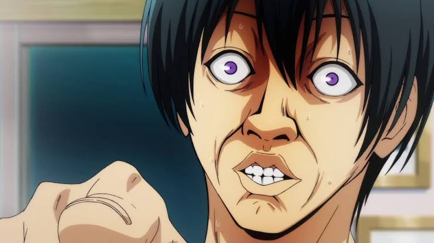

Welcome to this site. how are you? I feel terrible but I’m prettu sure that isn’t the point here

Hi. My name is Ihsal Riyas. a weird name I know. most people call me ishal instead. or CR if you’re from my class. call me whatever you want to be honest, as long as the permutation is close enough. to be honest, I wasn’t really sure as to what I should write here since I wrote pretty much everything about me during the amFOSS introduction on discord which lead to a brillaint idea. why CREATE new content when you can STEAL?!
that’s right gentlemen. I am going to copy paste my discord intro here. And before someone says, that isn’t the assignment, let me just say my intro was lietrally split into 3 messages since the intro was too big. I don’t think this hugo site of mine is going to be particularly brillaint in design but if there’s one thing I’m proud of, its being funny. well, I try to be anyways. anyways here’s me boiled down: Hi, everyone! My name is Ihsal Riyas(pronounced eh-sa-l, or ishal if you want. My name is quite annoying to say so I don’t mind anyone mispronouncing it as long as they are somewhat close). I’m a CSE-AI student at S1. My hobbies include(takes a deep breath) : anime, manga, manhwa, manhua, lightnovels, fiction(generally fantasy and a bit of a dabble in sci-fi), webnovels and of course webtoons( I only read like 4 of them so far but God is it amazing). Oh, drawing and movies as well. Of course I Read the Lord of the rings and it was . . . fine? Don’t get me wrong, there is definitely an audience for it but I’m afraid my fight loving mind wasn’t one of them. Like I was so obsessed with completing the story, I didn’t realise the villain was quite LITERALLY the tower! I just assumed he used the tower to spy and stuff. And before someone blames my attention span, let me just say I’m a huge fan of GOT and I understood 40% of all the foreshadowing (impressive, I know) Anyways that was quite a tangent? That was this about again? Oh ya, the icebreaker thing! I studied abroad (Oman, to be exact) up to my 10th grade. 11th was technically in kerela though I hardly can acknowledge that since I never even visited my school. Even the final exam was online. 12th was a pain. I decided to repeat at rays( a coaching centre at Kozhicode). since I wanted to actually learn the things I should have .for eg, while I have heard of Markonikov in 12th, it was always in reference to 11th and it was only after school I learned about it. Since I studied abroad for a while, I prefer speaking in English. While Malayalam is my mother tongue, it is unfortunately also my second language , so to speak. I should probably talk about my coding background. Do I have any? Kinda? I did learn python in school but I didn’t really have any other experience before that. Then I joiuned the recruitment process for bi0s since I heard the best clubs for codind are Bi0s and amFOSS. I have never felt as dumfounded as I did when I started doing the ‘easy;’ task on bi0s. like what is the hell is Ubuntu? Burp suite? Wireshark? i stlll remember how little I felt when I couldn’t even solve the easy ones in the first week or so. At the moment, its much easier. I understand how most of them work, if only on a surface level. Do I have a passion for coding? I don’t know to be honest. I have a passion for drawing but it isn’t something I actively do. I do it when I ‘m bored or just want to do something. Of course, I throw my fist in the air when the code I wrote for half an hour works perfectly and call myself a GENIUS. But I also die on the outside and cry on the inside when I realise the code wasn’t working because I forgot a goddamm semicolon (side note: why semicolon of all things? I can understand if it was a full stop. We use full stop to end a sentence but it’s a semicolon to finish a line on a program. Why semicolon?!) Anyways that’s about all I want to say. Any more and I might end up running out of characters on discord. I look forward to hopefully joining the amFOSS family(lol, I actually did run out of characters, well that’s why this was a 3 part msg)
this was my intro at the beginning of amFOSS. its not a lot different now to be honest. except fot the coding part. I’ve realized I have a deeper hatered than I initailly thought. one day, I am goingot kill the man who created the semicolon as an ending characters for programming languages.
~
~